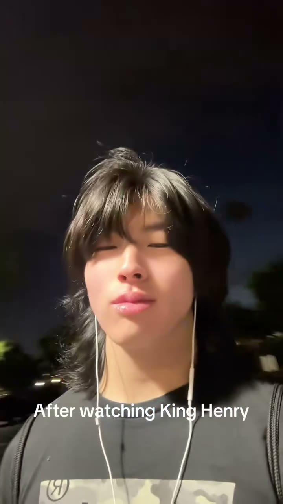
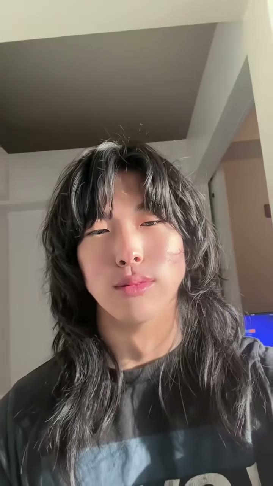
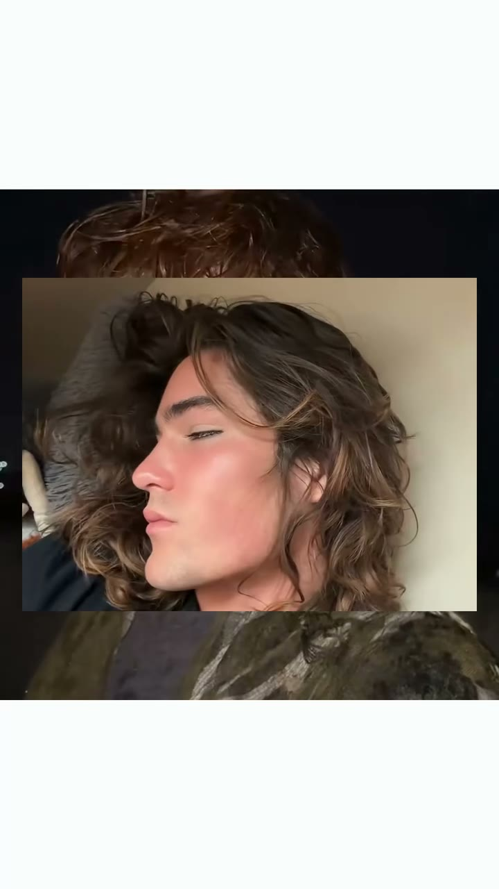
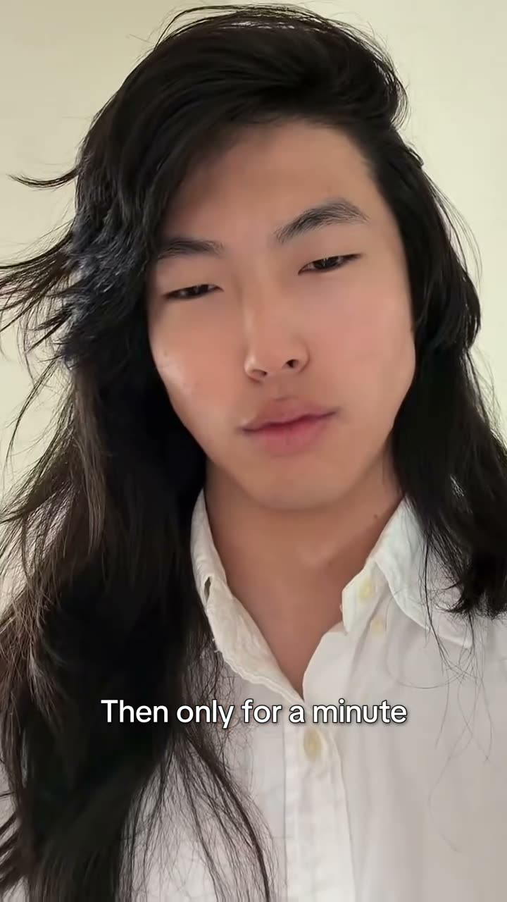
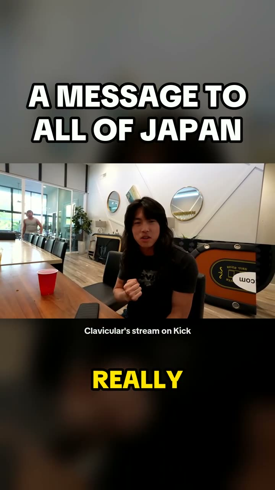

Vertical edits I made for my own accounts: 46.2K followers and 4M likes on TikTok (@samurairamen1), 27.3K followers on Instagram (@samurairamen2). The first second decides everything, so every cut is built around the hook.

A before-and-after glow-up, cut so the switch lands right on the beat.

A hair transformation, cut with an AI-assisted edit tool I built.

Ten seconds, with a new image stacked on every beat.

A before-and-after built around one line of on-screen text.

Found by my clipper in a 24-hour stream, reframed to vertical, with captions timed word by word.